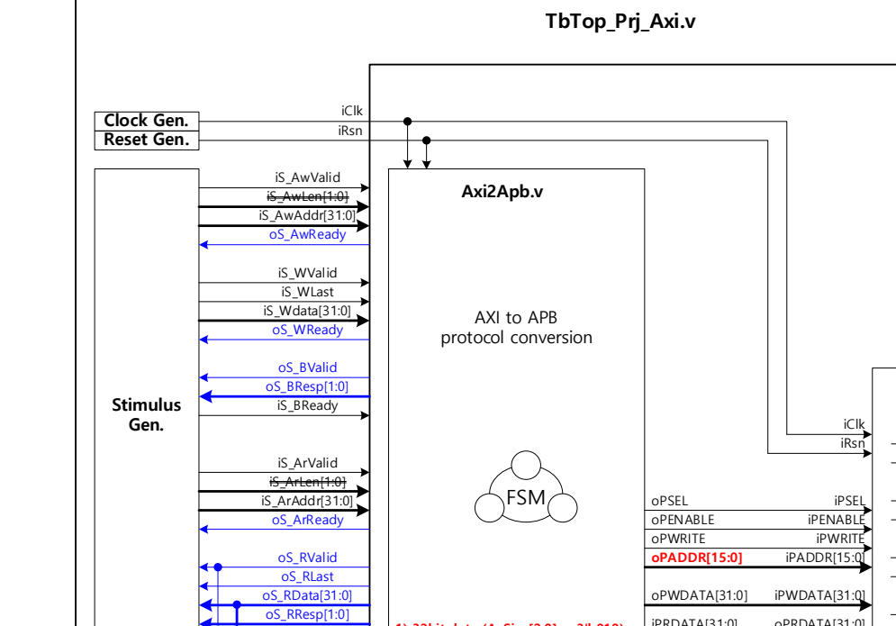
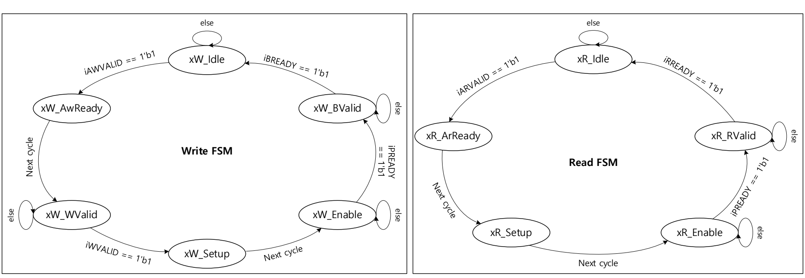
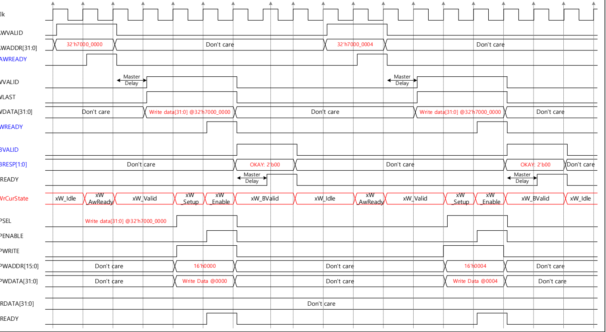
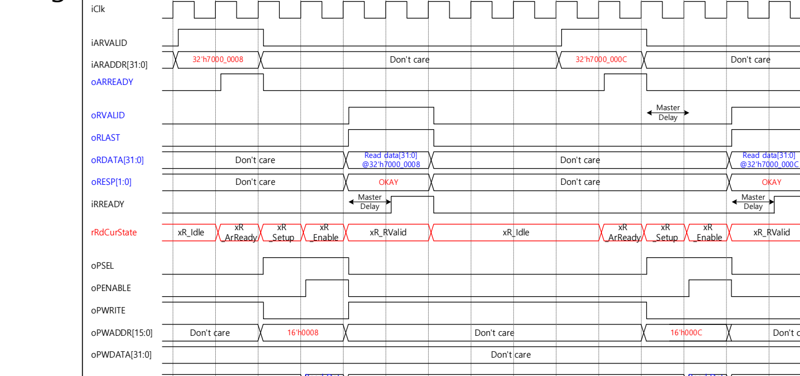

4. AXI-to-APB Bridge 설계와 검증
AXI-to-APB Bridge는 AXI master가 보낸 transaction을 APB slave가 이해할 수 있는 setup/enable transfer로 바꾸는 protocol conversion block이다.
최종 프로젝트에서는 AXI slave처럼 요청을 받는 Axi2Apb 모듈, 4개 register를 가진 ApbSlave,
둘을 연결한 top, 그리고 AXI master 역할을 하는 testbench를 작성해 write/read 동작을 검증했다.
4.1 Bridge란 무엇인가
SoC 안에는 서로 다른 bus protocol을 쓰는 블록이 함께 존재한다. CPU나 DMA는 AXI처럼 고성능 bus로 접근할 수 있고, UART, I2C, timer, control register block 같은 주변장치는 APB처럼 단순한 control bus에 붙는다. 이때 AXI master가 APB slave를 직접 이해할 수는 없으므로, 중간에서 protocol을 바꿔 주는 bridge가 필요하다.
Bridge는 단순히 신호 이름만 바꾸는 회로가 아니다. AXI에서는 write 주소와 write data가 다른 channel로 들어오고, write response도 별도 channel로 나간다. APB에서는 setup phase와 enable phase를 순서대로 만들어야 한다. 따라서 bridge RTL의 핵심은 “AXI handshake를 언제 완료로 볼 것인가”와 “APB transfer를 어느 state에서 만들 것인가”를 FSM으로 정하는 것이다.



4.2 최종 프로젝트 사양
프로젝트는 AXI 전체 사양을 모두 구현하는 것이 아니라, 교육용으로 범위를 제한한 AXI-to-APB conversion을 구현하는 과제였다. 데이터 폭은 32-bit, burst는 single burst, response는 OKAY(2'b00)를 기준으로 했다. APB slave는 0x0000, 0x0004, 0x0008, 0x000C offset에 대응하는 4개 register를 가진다.
| 블록 | 역할 | 내부 구현 포인트 |
|---|---|---|
| Axi2Apb.v | AXI slave 입력을 받아 APB master 신호 생성 | write FSM, read FSM, address/data latch, PSEL/PENABLE/PWRITE/PADDR/PWDATA 생성 |
| ApbSlave.v | APB target register bank | rA/rB/rC/rD 4개 register, PREADY 1-cycle pulse, read mux, write commit 조건 |
| Prj_Axi_Top.v | bridge와 slave 연결 | AXI side는 외부 port, APB side는 내부 wire로 연결 |
| TbTop_Prj_Axi.v | AXI master model testbench | task 기반 write/read, handshake timeout, response/readback 검사 |
4.3 Write path: AXI write를 APB write로 바꾸는 과정
write path는 AXI의 AW channel, W channel, B channel을 APB write transfer 하나로 묶는다.
Axi2Apb.v에서는 write FSM을 xW_Idle → xW_AwReady → xW_WValid → xW_Setup → xW_Enable → xW_BValid 순서로 구성했다.
AW handshake가 끝나면 write address를 저장하고, W handshake가 끝나면 write data를 저장한다.
이후 APB setup phase에서 PSEL/PWRITE/PADDR/PWDATA를 만들고, enable phase에서 PENABLE을 올린다.
APB slave가 PREADY를 올리면 AXI B response를 반환한다.
- xW_AwReady: AWVALID을 보고 AWREADY pulse를 발생시켜 write address handshake를 닫는다.
- xW_WValid: WVALID/WLAST/WDATA를 받고 WREADY pulse로 write data handshake를 닫는다.
- xW_Setup: APB setup phase. PSEL=1, PENABLE=0, PWRITE=1, PADDR/PWDATA를 출력한다.
- xW_Enable: APB enable phase. PENABLE=1로 올리고 iPREADY를 기다린다.
- xW_BValid: APB write가 끝난 뒤 BVALID/BRESP를 반환하고 BREADY handshake로 write transaction을 닫는다.
localparam [2:0]
xW_Idle = 3'd0,
xW_AwReady = 3'd1,
xW_WValid = 3'd2,
xW_Setup = 3'd3,
xW_Enable = 3'd4,
xW_BValid = 3'd5;
case (rWrCurState)
xW_Idle: rWrNxtState = xW_AwReady;
xW_AwReady: if (wAwFire) rWrNxtState = xW_WValid;
xW_WValid: if (wWFire) rWrNxtState = xW_Setup;
xW_Setup: rWrNxtState = xW_Enable;
xW_Enable: if (iPREADY) rWrNxtState = xW_BValid;
xW_BValid: if (wBFire) rWrNxtState = xW_Idle;
endcase
4.4 Read path: AXI read를 APB read로 바꾸는 과정
read path는 AXI의 AR channel과 R channel을 APB read transfer로 연결한다.
read FSM은 xR_Idle → xR_ArReady → xR_Setup → xR_Enable → xR_RValid 순서다.
AR handshake로 read address를 저장한 뒤 APB read setup/enable을 만들고, APB slave의 PRDATA를 AXI RDATA로 반환한다.
RVALID은 RREADY handshake가 성립할 때까지 유지되도록 구성했다.
- xR_ArReady: ARVALID을 보고 ARREADY pulse를 발생시켜 read address를 저장한다.
- xR_Setup: APB setup phase. PSEL=1, PENABLE=0, PWRITE=0, PADDR를 출력한다.
- xR_Enable: APB enable phase. PENABLE=1로 올리고 iPREADY를 기다린다.
- xR_RValid: APB PRDATA를 AXI RDATA로 반환하고 RVALID/RLAST/RRESP를 출력한다.
- R handshake: master가 RREADY를 올리면 read transaction을 닫고 idle로 돌아간다.
localparam [2:0]
xR_Idle = 3'd0,
xR_ArReady = 3'd1,
xR_Setup = 3'd2,
xR_Enable = 3'd3,
xR_RValid = 3'd4;
case (rRdCurState)
xR_Idle: rRdNxtState = xR_ArReady;
xR_ArReady: if (wArFire) rRdNxtState = xR_Setup;
xR_Setup: rRdNxtState = xR_Enable;
xR_Enable: if (iPREADY) rRdNxtState = xR_RValid;
xR_RValid: if (wRFire) rRdNxtState = xR_Idle;
endcase
4.5 READY pulse와 APB slave 구현
최종 코드에서는 AXI 쪽 READY를 단순히 계속 1로 두지 않고, VALID가 일정 cycle 유지된 뒤 1-cycle pulse로 발생시키는 방식으로 구성했다.
AWREADY는 AWVALID의 2번째 cycle, WREADY는 WVALID의 3번째 cycle,
ARREADY는 ARVALID의 2번째 cycle에 pulse로 올라오도록 했다. testbench도 이 timing에 맞춰 VALID를 유지한다.
wire wAwReadyPulse = (rWrCurState == xW_AwReady)
&& iS_AwValid && (rAwVcnt == 2'd1); // 2nd AWVALID
wire wWReadyPulse = (rWrCurState == xW_WValid)
&& iS_WValid && (rWVcnt == 2'd2); // 3rd WVALID
wire wArReadyPulse = (rRdCurState == xR_ArReady)
&& iS_ArValid && (rArVcnt == 2'd1); // 2nd ARVALID
wire wAwFire = iS_AwValid && oS_AwReady;
wire wWFire = iS_WValid && oS_WReady;
wire wArFire = iS_ArValid && oS_ArReady;여기서 counter를 둔 이유는 testbench가 일부러 VALID를 여러 cycle 유지하는 조건을 만들었기 때문이다. bridge가 VALID를 보는 즉시 READY를 내는 것이 아니라, 정해진 cycle에 READY pulse를 내도록 하여 write/read timing diagram과 파형을 맞췄다. 이 구조 덕분에 master delay가 있는 상황에서도 handshake가 한 cycle pulse로 명확하게 보인다.
if (rWrCurState == xW_Setup) begin
oPSEL = 1'b1;
oPENABLE = 1'b0;
oPWRITE = 1'b1;
oPADDR = rWrAddr[15:0];
oPWDATA = rWrData;
end else if (rWrCurState == xW_Enable) begin
oPSEL = 1'b1;
oPENABLE = 1'b1;
oPWRITE = 1'b1;
oPADDR = rWrAddr[15:0];
oPWDATA = rWrData;
end
ApbSlave.v는 APB transfer 완료를 PSEL & PENABLE & PREADY로 본다.
PREADY는 enable phase에서 1-cycle pulse로 올라가고, write는 이 완료 조건이 성립한 cycle에만 commit된다.
read는 PADDR[5:2]를 이용해 0x0, 0x4, 0x8, 0xC register 중 하나를 mux로 선택한다.
wire wSetup = iPSEL & ~iPENABLE;
wire wEnable = iPSEL & iPENABLE;
if (wEnable && iPWRITE && oPREADY) begin
case (iPADDR[5:2])
4'h0: rA <= iPWDATA;
4'h1: rB <= iPWDATA;
4'h2: rC <= iPWDATA;
4'h3: rD <= iPWDATA;
endcase
end
always @(*) begin
case (iPADDR[5:2])
4'h0: oPRDATA = rA;
4'h1: oPRDATA = rB;
4'h2: oPRDATA = rC;
4'h3: oPRDATA = rD;
default: oPRDATA = 32'h0;
endcase
end4.6 Testbench와 최종 검증
검증은 파형을 눈으로 보는 것에서 끝내지 않고, testbench에 AXI master 동작을 task로 만들었다. write task는 AWVALID을 2 cycle 유지하고, WVALID/WLAST/WDATA를 3 cycle 유지한 뒤 handshake가 발생했는지 확인한다. read task는 ARVALID을 2 cycle 유지하고, RVALID이 올라온 뒤 master delay 후 RREADY를 pulse로 올린다.
testbench는 4개 APB register에 값을 write한 뒤 다시 readback하여 기대값과 비교했다.
handshake가 빠지거나 response가 맞지 않거나 readback 값이 틀리면 error를 출력하고,
모든 조건이 맞으면 최종적으로 PASS: 4REG write/read + timing OK를 출력한다.
// write task: AWVALID 2 cycles, WVALID/WLAST/WDATA 3 cycles
axi_write_shape(32'h7000_0000, 32'h7000_0000, 2, 2);
axi_write_shape(32'h7000_0004, 32'h7000_0004, 2, 2);
axi_write_shape(32'h7000_0008, 32'h7000_0008, 2, 2);
axi_write_shape(32'h7000_000C, 32'h7000_000C, 2, 2);
// read task: ARVALID 2 cycles, RVALID 확인 후 RREADY pulse
axi_read_shape(32'h7000_0000, rd, 2, 2);
if (rd !== 32'h7000_0000) $finish;
$display("[%0t] PASS: 4REG write/read + timing OK", $time);

[1145000] PASS: 4REG write/read + timing OK
Simulation complete via $finish(1) at time 1245 NS4.7 이 프로젝트에서 실제로 익힌 것
이 프로젝트의 핵심은 AXI와 APB의 정의를 외운 것이 아니라, 서로 다른 protocol의 완료 조건을 RTL 상태기계로 맞춘 것이다. AXI 쪽에서는 channel별 VALID/READY handshake를 닫아야 하고, APB 쪽에서는 setup-enable-PREADY 순서를 만들어야 한다. 그 사이에서 address와 data를 latch하고, response를 적절한 channel로 돌려주는 것이 bridge의 역할이다.
그래서 이 실습은 단순한 Verilog 과제가 아니라, software가 bus를 통해 hardware register에 접근하는 end-to-end 경로를 직접 구성한 경험이다. 이후 센서, FPGA, host가 연결된 시스템을 볼 때도 register 설정, data path 제어, handshake, readback 검증을 같은 기준으로 해석할 수 있다.